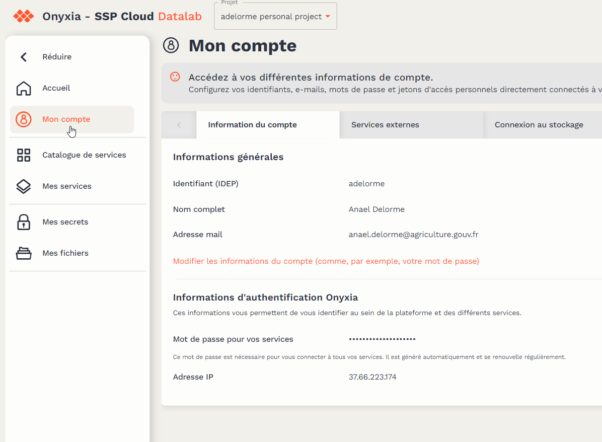
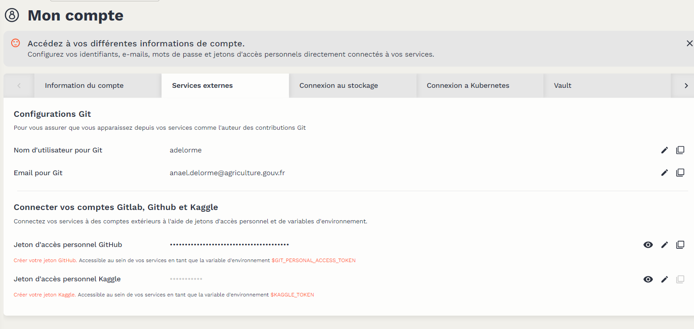

2 Prérequis
La création d’un site de suivi de collecte nécessite l’utilisation de différents services gratuits. Chacun de ces services nécessite la création d’un compte.
2.1 Github
(Github)[https://github.com/] est un service web de stocker des programmes informatiques et de gérer les versions de ces programmes. Les fonctionnalités de Github qui nous intéresse pour la création des sites de suivi de collecte :
- Gestion de versions : GitHub utilise Git pour permettre le suivi des modifications apportées aux fichiers. Vous pouvez cloner, pousser et tirer des référentiels Git, ce qui facilite la collaboration sur le code source.
- Collaboration : GitHub permet à plusieurs contributeurs de travailler ensemble sur un même projet.
- Actions GitHub; GitHub permet d’automatiser des flux de travail (workflows) permettant des déploiements d’application par exemple.
Pour créer un compte GitHub, suivez ces étapes :
- Accédez au site web de GitHub : Github
- Sur la page d’accueil, vous verrez un formulaire d’inscription “Sign up for Github”. Saisissez votre adresse mail pro et laissez vous guider.
- Vous recevrez un e-mail de vérification à l’adresse e-mail que vous avez fournie. Suivez les instructions de l’e-mail pour vérifier votre compte.
2.2 Datalab SSP Cloud
Le Datalab SSP Cloud est une plateforme libre service mutualisée de traitement de données, destinée aux statisticiens et data scientists de l’État.
Vous pouvez vous créer un compte en allant sur la page Datalab, puis en haut à droit Connexion et Créer un compte.
Il peut être utile de lire cette page de la documenation du datalab : Première utilisation
Quand votre compte est créé, contactez François Semecurbe ou Anaël Delorme pour vous donner les droits de déposer les données.
2.3 Jeton d’accès personnel Github dans le datalab
Les programmes sont stockés sur Github et l’outil préconisé pour les modifier est le datalab. Pour faire le lien entre les 2 outils nous préconisons la création d’un jeton d’accès personnel côté Github, jeton qui sera inséré dans le datalab.
2.3.1 Création d’un jeton d’accès Github
La création d’un jeton d’accès Github est documentée par Github (en français !) : Création d’un personnal access token (classic)
2.3.2 Ajout dans le datalab
Il faut aller dans Mon compte du datalab :

Puis choisir Service externe et là ajouter votre jeton Github :

2.4 DockerHub
Pour déployer l’application, on a mettre l’application shiny dans un Docker : c’est une technologie qui permet d’emballer une application ou un logiciel, ainsi que toutes ses dépendances, dans un conteneur virtuel. Cela permet d’assurer que l’application fonctionne de manière fiable et de manière cohérente, quel que soit l’endroit où elle est exécutée, que ce soit sur votre propre ordinateur, dans un centre de données ou dans le cloud.
Le docker avec l’application shiny et ses dépendances sera stocké dans le DockerHub : c’est une plateforme de distribution de conteneurs qui permet aux développeurs de stocker, gérer et partager des images de conteneurs Docker.
Pour créer un compte sur Docker Hub, suivez ces étapes :
- Accédez au site web de Docker Hub : https://hub.docker.com.
- Cliquez sur le bouton “Sign Up” ou “Don’t have an account? Sign up” pour créer un compte.
- Suivez les étapes.
- Vous recevrez un e-mail de vérification à l’adresse e-mail que vous avez fournie. Suivez les instructions de l’e-mail pour vérifier votre compte.